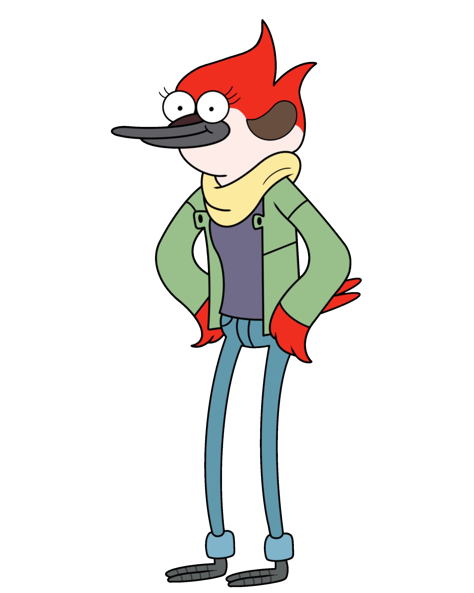

Personaggi Principali
Margaret
Margaret è un cardinale rosso che lavora come barista. È l'interesse amoroso iniziale di Mordecai e, sebbene abbiano avuto una relazione, alla fine si separano. Dopo aver lasciato la città per l'università, ritorna come giornalista di successo.